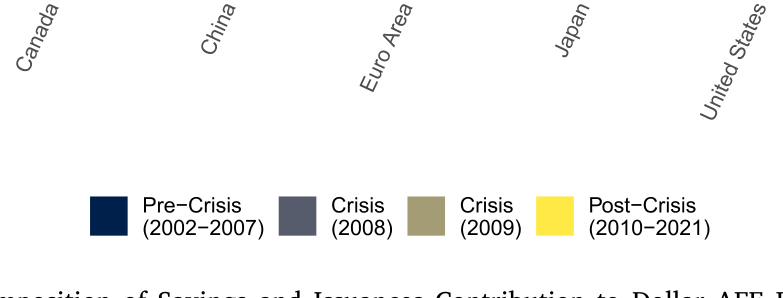
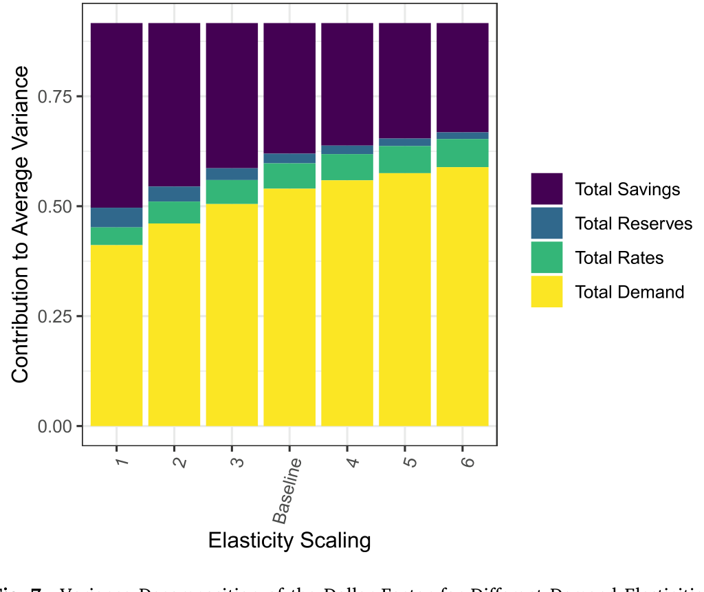
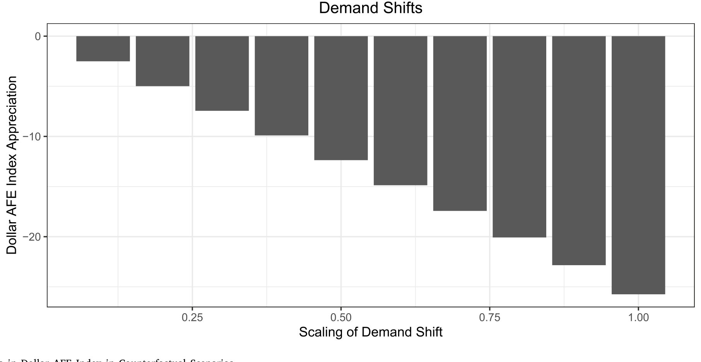
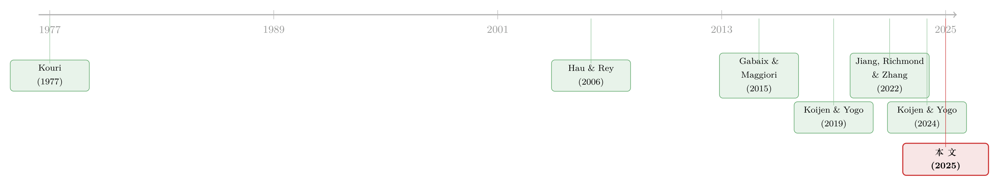

美元为什么强？——把一条汇率曲线拆回它的「供给与需求」
本文读的是 Jiang, Richmond & Zhang (2025, Journal of Financial Economics)：作者用一套「全球资产需求体系」把美元的强弱拆回到储蓄、资产供给、货币政策与投资者需求这几个最原始的经济变量上，发现同一股「追逐风险资产」的力量，在 2000 年代让美元贬值、在 2010 年代却让美元升值——美元的周期性，在这二十年里被悄悄地翻转了。
1 一条人人都在讲、却很少有人算过的曲线
打开任何一份宏观研报，关于美元的故事从来不缺。2000 年代初，美元持续走软，人们说那是资本「外逃」去新兴市场追增长；2008 年危机一来，美元暴力升值，人们说那是全球投资者奔向美国资产「避险」；恐慌平息后美元又软了下去；而从 2012 年起，美元开始了长达十年的升值，人们又说，那是美联储和其他央行货币政策「分化」的结果。
这些故事都讲得通。问题在于——它们几乎从来没有被数据量化过。到底是「避险需求」贡献了几个百分点？是「利率分化」贡献了几个百分点？当两股力量一个推美元向上、一个拉美元向下时，净效果是多少？更麻烦的是，这些叙事彼此之间常常是冲突的：同样是「投资者偏好风险资产」，在 2000 年代它对应美元贬值，在 2010 年代却对应美元升值。一个会随时间反转方向的「解释」，还能叫解释吗？
这正是本文要回答的张力。作者想做的，不是再编一个动听的叙事，而是给美元的每一次涨跌记一笔可以加总的账：把汇率这个均衡变量，分解回它背后那几个最原始（primitive）的供给与需求来源。
这篇文章的母题其实只有一个：汇率是内生的，它是供给与需求出清的结果。一旦你接受这一点，研究汇率的任务就从「讲故事」变成了「做分解」——把均衡汇率的变动，归因到那些你愿意当作外生的原始变量上。全文都在把这一件事讲透。
2 一个被低估的视角：把汇率当成「价格」来分解
我们习惯用利率平价、用购买力平价去想汇率。但本文换了一个更朴素的视角：汇率不过是「外币」这件资产的价格，而任何价格都由供给和需求决定。
于是问题被重新组织了。首先，谁在「需求」一国的资产？是全球的投资者，按各自的财富、偏好、对预期收益的判断，把钱配置到各国的股票与债券上。接着，一个自然的问题是：什么决定了「供给」？是各国发行在外的股票市值与债券面值，再加上央行的储备操作。然后，当全球投资者的需求与各国资产的供给在每一个市场同时出清时，汇率和资产价格就一起被定了下来。
这套思路有一个名字——资产定价的需求体系方法 (demand system approach to asset pricing)，由 Koijen and Yogo (2019) 开创，后来被 Koijen and Yogo (2024) 推广到全球汇率，本文则直接采用了 Jiang, Richmond and Zhang (2022) 搭好的国际资产需求模型。它的好处是：你可以把一组你愿意当作外生的「原始变量」固定住，问一句反事实的话——
如果从去年到今年，所有外生变量都没变，那么汇率、资产价格、组合配置这些内生变量，本该也纹丝不动。
正是靠这句话，作者得以把每一年汇率的实际变动，一笔一笔地摊派给各个外生因子的变化。他们把这些原始变量分成三大类：(i) 投资者储蓄与资产发行 (savings and issuances)、(ii) 央行货币政策（利率与储备）、(iii) 投资者需求 (investor demand)。
（关于「为什么有人会用一套需求体系、而不是传统的均衡定价去解释价格」，可参见《弱替代：因子动物园是从哪里冒出来的？》与《谁在持有这张债券，决定了它的价格》。）
3 模型：一条需求曲线，如何长出一个汇率
这是全文的引擎，值得一步步拆开看。模型是离散时间的：有 \(I\) 个投资者国家，各由一个代表性投资者持有全球资产；有 \(N\) 个发行国，资产分成短债（\(\ell=1\)）、长债（\(\ell=2\)）、股权（\(\ell=3\)）三类。
第一步：把组合权重拆成两层。 投资者 \(i\) 在发行国 \(n\)、资产类别 \(\ell\) 上的权重，被拆成「类别内」与「类别间」两部分：
$$ w_{i,t}(n,\ell)=w_{i,t}(n\,|\,\ell)\cdot w_{i,t}(\ell). $$
这就像先决定「把多少钱放进长债这个篮子」，再决定「长债里给德国多少」。
第二步：类别内用 logit 需求曲线。 在某一资产类别里，投资者对各国资产的相对配置由一个 logistic 函数给出：
$$ w_{i,t}(n\,|\,\ell)=\frac{\delta_{i,t}(n,\ell)}{1+\sum_{k=1}^{N}\delta_{i,t}(k,\ell)} . $$
分母里的 \(1\) 对应那个「外部资产」（不在样本里的小国），所以各国权重之和小于 1，剩下的留给外部资产。真正承载经济含义的，是这个表示「某国资产相对吸引力」的 \(\delta_{i,t}(n,\ell)\)：
$$ \delta_{i,t}(n,\ell)=\exp\!\big(\beta_\ell\,\mu_{i,t}(n,\ell)+\boldsymbol{\theta}_\ell'\,\mathbf{x}_{i,t}(n)+\kappa_{i,t}(n,\ell)\big). $$
这正是整个模型的心脏。它说，一国资产对某个投资者的吸引力，由三块拼成——预期收益、可观测特征、以及一个「装不进前两者」的潜在需求。把它单独标注出来：
这里有一个细节值得停一下：可观测特征 \(\mathbf{x}_{i,t}(n)\) 里，就包含了「贸易网络中心度」(trade network centrality, Richmond, 2016)——一国在全球贸易网里坐第几排，会影响它的货币被多少人需要。（这条线索本身就够写一篇，见《你的货币贵不贵，要看你在贸易网络里坐第几排》。）
第三步：预期收益从哪来？ 预期收益 \(\mu_{i,t}(n,\ell)\) 不是凭空给的，而是用一个预测回归估出来的。沿用 Koijen and Yogo (2024) 的设定：
$$ r_{t+1}(n,\ell)-r_{t+1}(US,1)=\phi_\ell\cdot pb_t(n,\ell)+\psi_\ell\cdot\big(e_t(n)-z_t(n)\big)+\chi_{n,\ell}+\nu_{t+1}(n,\ell). $$
它把超额收益投影到「市值账面比」\(pb_t(n,\ell)\) 与「实际汇率」\(e_t(n)-z_t(n)\) 上。再换算成投资者本币计价的预期超额收益：
$$ \mu_{i,t}(n,\ell)=\phi_\ell\,pb_t(n,\ell)+\psi_\ell\big(e_t(n)-z_t(n)\big)+\chi_{n,\ell}-\phi_1\,pb_t(i,1)-\psi_1\big(e_t(i)-z_t(i)\big)-\chi_{i,1}. $$
第四步：类别间用嵌套 logit。 投资者在三大类资产间的分配，由一个嵌套 logit (nested logit) 给出：
$$ w_{i,t}(\ell)=\frac{\big(1+\sum_{k=1}^{N}\delta_{i,t}(n,\ell)\big)^{\lambda_\ell}\exp\!\big(\alpha_\ell+\xi_{i,t}(\ell)\big)}{\sum_{m=1}^{3}\big(1+\sum_{k=1}^{N}\delta_{i,t}(k,m)\big)^{\lambda_m}\exp\!\big(\alpha_m+\xi_{i,t}(m)\big)}. $$
那个 \(\big(1+\sum_k\delta\big)\) 项叫「类别内含价值 (inclusive value)」，衡量一整类资产的整体吸引力——当一类资产里的价格普遍上涨，这一类整体变得不那么诱人，投资者就会成类地转出去。
第五步：财富会动。 投资者的资产管理规模随持仓收益滚动，再加上净储蓄：
$$ A_{i,t}=A_{i,t-1}\sum_{\ell=1}^{3}\sum_{n=0}^{N}w_{i,t-1}(\ell)\,w_{i,t-1}(n\,|\,\ell)\,R_t(n,\ell)+F_{i,t}. $$
最后一步——也是真正把汇率「逼」出来的一步：市场出清。 每一个资产 \((n,\ell)\)，它的美元市值必须等于全球私人投资者与各国央行对它的总需求：
$$ PB_t(n,\ell)\,E_t(n)\,Q_t(n,\ell)=\sum_{i=1}^{N}A_{i,t}\,w_{i,t}(\ell)\,w_{i,t}(n\,|\,\ell)+\sum_{i=1}^{N}PB_t(n,\ell)\,E_t(n)\,B_{i,t}(n,\ell). $$
注意左边的汇率 \(E_t(n)\) 与市值账面比 \(PB_t(n,\ell)\) 都是内生的。供给 \(Q\)、储蓄、央行储备 \(B\) 当作外生，于是这一组出清方程把汇率解了出来。整篇论文做的「分解」，本质上就是：动一动某个外生变量，看新解出来的 \(E_t(n)\) 偏移了多少。
4 主要结果：同一股力量，两个相反的符号
有了这台引擎，作者把 2002–2021 分成四个子区间，逐一拆账。美元 AFE 指数追踪的是七个发达经济体货币的贸易加权篮子（欧元区 36%、加拿大 30%、日本 14%、英国 11%、瑞士 4%、澳大利亚 3%、瑞典 1%）。
危机前（2002–2007），美元为什么软？ 主因是投资者需求的转移：钱从美国资产挪向外国资产，单这一项就解释了美元指数 25 个百分点的贬值。储蓄与资产发行又额外解释了 11 个百分点的贬值——欧洲等地区因「本土偏好」把储蓄留在本国资产，推高了它们自己的货币。唯一逆势托住美元的是利率：美国相对外国加息，抵消了约 5 个百分点的贬值。

Figure 2: Decomposition of Savings and Issuances Contribution to Dollar AFE Index By
2008，美元为什么暴涨？ 那一年美元对 AFE 篮子升值了 10%。一部分来自储蓄与发行，一部分来自需求在恐慌中「奔回」美国安全资产的避险流。
危机后（2010–2021），美元为什么连涨十年？ 模型把这场长牛主要归给储蓄与需求：储蓄解释了 14 个百分点的升值，需求转向美国资产又解释了 11 个百分点。这里藏着本文最漂亮的一个反转——
2000 年代初是一个「风险偏好上行 (risk-on)」期，结果是资金涌向新兴市场、美元贬值；2010 年代又是一个 risk-on 期，但这一次投资者觉得美国的风险资产（尤其美股）更香，于是资金涌向美国、美元升值。同样的「追逐风险」，在两个十年里给了美元相反的符号。美元的周期性，被这股需求悄悄翻转了。
那利率分化呢？ 出人意料，模型没有把美元的长期趋势归给利率政策。原因是：在每个子样本内部，美国与外国的利率大体收敛了，长期净效应不大。但这并不意味着利率没用——逐年来看，美外利差确实驱动汇率，且作者估计美国利率每升 1 个百分点，美元升值 3.3%，这与用高频识别策略得到的结果（Curcuru et al., 2017）一致。
跨境银行贷款呢？ 同样地，作者把跨境银行贷款也并进需求体系，结论是它对长期美元强弱影响有限——银行流在年度频率上很波动，但在更长的窗口里彼此对冲掉了。
5 第二与第三个矩：美元「因子」的方差与 beta
讲完了水平（level），作者把同一套分解搬到美元的另外两个矩上。国际资产定价文献早就发现，「平均美元汇率」是一个系统性因子，能解释各国双边汇率的大部分变动（Verdelhan, 2018）。那么，是什么在驱动这个美元因子？
答案是：储蓄与发行解释了它方差的 36%，投资者需求转移解释了 55%，而货币政策利率与储备只占很小一块。换句话说，全球储蓄与需求冲击不只塑造了美元的长期趋势，也主导了美元因子的短期波动。

Figure 7: Variance Decomposition of the Dollar Factor for Different Demand Elasticities
更细一层：各国货币在美元因子上的载荷（即它们的「美元 beta」）从哪来？作者发现，储蓄与发行解释了「为什么各国都有正的美元 beta」，而需求转移解释了「为什么有的国家 beta 更高」。当需求把资本推向美国、推升美元时，日本往往是需求驱动资本流的承接方，日元因此走强；而澳大利亚正相反，这些时期它资本外流、澳元走弱。这条横截面差异，或许能为各国货币风险溢价的来源提供线索。
6 反事实：如果中国清空美债，美元会崩吗？
最后，作者把模型当成一台「反事实模拟器」，回答一个常被政界念叨的问题：如果一个大经济体（比如中国）出于自身原因，单方面抛售它持有的全部美国资产，美元会怎样？
模型给出的答案出人意料地温和：只要美国基本面稳定，单一国家的抛售，会被其他国家的承接所吸收——因为美国资产够「特殊」，外国投资者愿意只用很小的折价就替换进美国资产。真正危险的，不是某一国单飞，而是一场相关的、共同的美元资产需求冲击——那才可能引发美元的大幅贬值。

Figure 9: Change in Dollar AFE Index in Counterfactual Scenarios
这个结论的关键全在「替代弹性」上：投资者在各国资产间替代得越容易，单点抛售的冲击就越被稀释。也正因如此，这个弹性的估计是全文最要害、也最该被追问的假设。
7 文献脉络
把这篇论文放进它的家谱里，线索其实很清楚。
最早，是 Kouri (1977)、Kouri et al. (1978) 把汇率与国际资本流动联系起来的「组合—国际收支」传统。接着，理论上有两条腿往前迈：一条是 Hau and Rey (2006) 的汇率—股价—资本流动均衡模型，另一条是 Gabaix and Maggiori (2015) 在分割市场里刻画汇率与资本流的框架。然后，真正改变方法论的，是 Koijen and Yogo (2019) 把「需求体系」引入资产定价，并由 Koijen and Yogo (2024) 推广到全球汇率；与此并行，Gabaix and Koijen (2021) 用「非弹性市场假说」论证了资金流对价格的巨大影响。

而本文最直接的母体，是 Jiang, Richmond and Zhang (2022) 的「全球失衡的组合方法」——它搭好了模型，本文则把这台引擎对准一个具体而尖锐的问题：美元的强弱，到底由哪些原始供需力量决定。在「美元是全球风险晴雨表」（Rey, 2013; Miranda-Agrippino and Rey, 2020）与「美元价值系于安全资产需求」（Jiang et al., 2021）这两派叙事之间，本文提供的不是又一个故事，而是一本可加总的账。
（与本文气味相投的实证作品，还可参见《一封邮件，如何掀动一国的汇率与套利定价？》与《对着美联储「逆向操作」：外汇干预能挡住美国货币政策的外溢吗？》。）
8 评论与延伸（Q&A + 研究方向）
(a) 几个可能的疑问
Q：这套「分解」是因果，还是只是会计恒等式？
严格说，它是一个结构化的归因，而非传统意义上的因果识别。它的可信度，完全取决于「把储蓄、供给、央行政策当作外生」这一组假设是否站得住。作者自己也坦白，资产供给不响应价格、央行政策外生，都是「可能偏强」的假设。所以更准确的说法是：在模型设定为真的前提下，这是一笔自洽的账。
Q：最该被追问的假设是哪一个？
是需求的价格弹性。作者用「横截面上投资者如何在各国间替代」估出弹性，再假设它等于「时间序列上对价格冲击的替代弹性」。这是一个很强、且难验证的等同。整篇文章的所有量级——尤其是中国抛售那个「温和」的反事实——都对这个弹性敏感。
Q：为什么利率几乎不解释长期美元，却又说「1pp 加息升值 3.3%」？
两者不矛盾。逐年看，利差确实驱动汇率，且短期效应可观（3.3%）；但在每个多年子样本内部，美外利率大体收敛，正负相抵，于是对长期趋势的净贡献很小。这恰恰说明了「短期信号」与「长期趋势」是两回事。
Q：把「投资者需求」当成解释变量，会不会是在用结果解释结果？
这是最值得警惕的地方。模型里的潜在需求 \(\kappa\) 是「收益与特征都解释不了的残差」，它天然会吸收掉一切未建模的东西。说「需求转移解释了 25pp 贬值」，部分等于说「我们没建模的力量解释了 25pp」。它的价值在于把这块残差量化并定位到具体投资者—资产对上，而非给出一个深层机制。
Q：为什么单一大国抛售美债的冲击这么小，这可信吗？
在模型里可信，因为它假设其他国家愿意以很小折价承接——这又回到了「美国资产特殊性」与「替代弹性」。如果现实中的弹性比估计值低得多，或者抛售触发了相关的恐慌（即作者说的「共同需求冲击」），冲击会被放大。所以这个结论应读作「在基准弹性下、且无连锁反应时」的温和。
Q：这和「美元微笑」「全球金融周期」那些宏观叙事是什么关系？
是互补，不是替代。全球金融周期（Rey, 2013）讲的是「美元强 = 全球风险偏好的晴雨表」，本文则把这个晴雨表拆开，告诉你晴雨背后是哪一类投资者、对哪一类资产的需求在动。它给宏观叙事补上了一张资产负债表层面的明细账。
(b) 几个可能的研究问题与提案
1. 把同一套需求体系搬到公司债 / 信用市场。
【经济故事】本文做的是主权与股权层面的国际资产需求。但美元的「特殊性」很大程度上体现在美国公司债这一全球最深的信用市场上：外资持有人对美国投资级公司债的需求转移，是否同样能解释美元强弱与信用利差的联动？ 【可行性】中。数据上可用 TIC 的双边债券持仓 + Mergent FISD / TRACE 的发行与定价；识别上可沿用本文的需求体系，但需把信用风险特征纳入 \(\mathbf{x}\)。难点是公司债供给的内生性比主权债更强。
2. 用一次「干净」的外生需求冲击去检验那个关键弹性。
【经济故事】全文的命门是「横截面弹性 = 时间序列弹性」这一等同。如果能找到一次外生的、定向的需求冲击（如某国养老金监管改革强制再配置、指数纳入规则变更），就能直接估出时间序列弹性，验证或证伪这一假设。 【可行性】中高。指数重构、监管改革是成熟的识别来源（参见《一封邮件，如何掀动一国的汇率与套利定价？》）。难在找到足够大、且只动「需求」不动基本面的事件。
3. 外资持有人结构与美元流动性的横截面。
【经济故事】本文发现需求转移解释了各国「美元 beta」的横截面差异（日本承接、澳洲外流）。一个自然的延伸：在美国资产内部，不同券种的「外资持有人集中度」是否预测了它们在美元冲击下的流动性恶化？ 【可行性】高。可用 TIC 按券种—持有国拆分的持仓，匹配美债 / 公司债的流动性指标（买卖价差、价格冲击），做横截面回归。数据现成，识别相对干净。
4. 央行储备政策的内生化。
【经济故事】作者明确把央行储备当外生，并坦言 QE 等政策的内生性「留给未来」。但量化宽松恰恰会通过压低债券与货币风险溢价改变汇率（Greenwood et al., 2023）。把储备政策对价格的反应函数嵌进需求体系，会怎样改写危机后那十年的分解？ 【可行性】中低。理论上要给央行一个目标函数，实证上要识别储备操作中的「主动」成分。难，但这是本文留下的最大一块空白。
9 我的判断
这篇论文最大的贡献，在于把一个长期靠「讲故事」支撑的领域，第一次变成了一笔可以加总、可以分项、可以做反事实的账。它最漂亮的一个发现——同一股 risk-on 需求在两个十年里给美元相反的符号——只有在这种分解框架下才看得出来；任何单一叙事都会在这里自相矛盾。把储蓄、供给、政策、需求摊在同一张表上彼此抵消或叠加，这种「会计纪律」本身就是方法论上的推进。
但我对识别有两点真实的担忧。其一，是那个被反复使用的「横截面弹性 = 时间序列弹性」的等同——它没有被独立验证，而几乎所有量级（尤其是中国抛售的「温和」结论）都建在它上面。其二，是「投资者需求」这个解释变量的残差属性：当一个因子被定义为「其他都解释不了的部分」，它解释力越强，反而越提醒我们机制仍在黑箱里。说「需求解释了 55% 的方差」是一个有用的记账结果，但它本身不是一个可以反驳的经济机制。
我接下来最想看到的，是两件事：一是用一次干净的外生需求冲击，把那个关键弹性单独估出来，给整座大厦做一次承重测试；二是把这套引擎对准美国公司债与外资持有人——那里既是美元「特殊性」最集中的地方，也是流动性最容易出问题的地方。如果需求体系能在信用市场里同样跑通，这条研究线就不只是解释了一条汇率曲线，而是真正抓住了「谁在持有美元资产、以及当他们改变主意时会发生什么」。
参考文献
- Curcuru, S., et al. (2017). The sensitivity of the US dollar exchange rate to changes in monetary policy expectations. IFDP Notes, Board of Governors of the Federal Reserve System.
- Gabaix, X., & Koijen, R. S. (2021). In Search of the Origins of Financial Fluctuations: The Inelastic Markets Hypothesis. NBER Working Paper.
- Gabaix, X., & Maggiori, M. (2015). International liquidity and exchange rate dynamics. Quarterly Journal of Economics 130(3), 1369–1420.
- Greenwood, R., Hanson, S. G., Stein, J. C., & Sunderam, A. (2023). A quantity-driven theory of term premia and exchange rates. Quarterly Journal of Economics 138(4), 2327–2389.
- Hau, H., & Rey, H. (2006). Exchange rates, equity prices, and capital flows. Review of Financial Studies 19(1), 273–317.
- Jiang, Z., Krishnamurthy, A., & Lustig, H. (2021). Foreign safe asset demand and the dollar exchange rate. Journal of Finance 76(3), 1049–1089.
- Jiang, Z., Richmond, R. J., & Zhang, T. (2022). A portfolio approach to global imbalances. Journal of Finance 79(3), 2025–2076.
- Koijen, R. S., & Yogo, M. (2019). A demand system approach to asset pricing. Journal of Political Economy 127(4), 1475–1515.
- Koijen, R. S., & Yogo, M. (2024). Exchange rates and asset prices in a global demand system. NBER Working Paper No. 27342.
- Kouri, P. J. (1977). The exchange rate and the balance of payments in the short run and in the long run: A monetary approach. In Flexible Exchange Rates and Stabilization Policy, Springer, 148–172.
- Miranda-Agrippino, S., & Rey, H. (2020). US monetary policy and the global financial cycle. Review of Economic Studies 87(6), 2754–2776.
- Rey, H. (2013). Dilemma not trilemma: the global financial cycle and monetary policy independence. Federal Reserve Bank of Kansas City Economic Policy Symposium.
- Richmond, R. J. (2016). Trade network centrality and currency risk premia. Journal of Finance.
- Verdelhan, A. (2018). The share of systematic variation in bilateral exchange rates. Journal of Finance 73(1), 375–418.